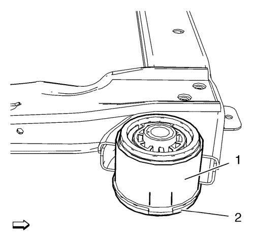
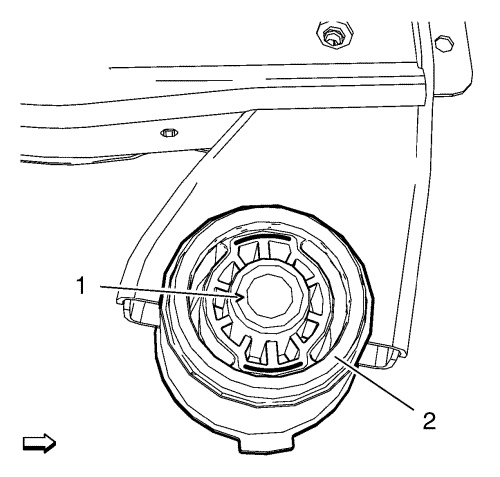
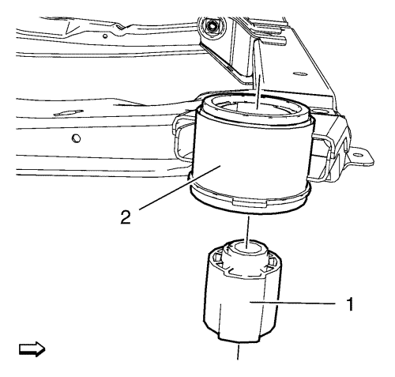
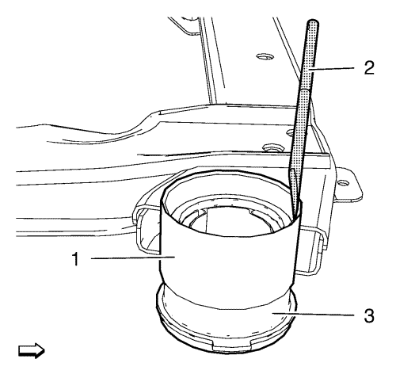
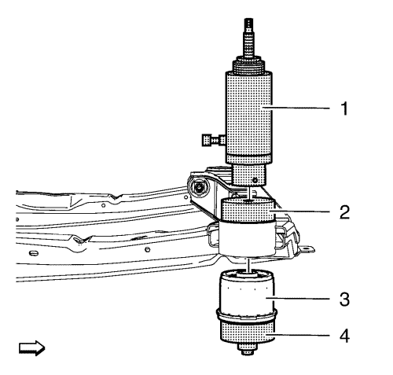

Sustitución del aislante del bastidor de suspensión delantero y tren de propulsión
Herramientas especiales
| • | CH-6615-10 Cilindro hidráulico |
| • | CH-6616 Bomba hidráulica manual |
Para herramientas regionales equivalentes. Consultar Herramientas especiales .
Procedimiento de desmontaje
- Desmonte el bastidor de la suspensión delantera y del tren de rodaje. Consultar Sustitución del bastidor de la suspensión delantera y del tren de rodaje .

- Marque la posición de montaje del aislador (2) en el marco (1).

Nota: Taladre orificios en la goma del aislador trasero para ganar acceso para la sierra de vaivén.
- Recorte el alma del aislador del marco (1) del aislador del marco (2).

- Desmonte el alma del aislador del marco (1) del aislador del marco exterior (2).

- Extraiga el aislador del marco (3) del tren motriz y del marco de suspensión del tren anterior (1) con el cincel CH-48377-1 (2).
Procedimiento de montaje

- Monte los siguientes componentes en el tren motriz y el marco de suspensión del tren anterior
| • | Cilindro hidráulico CH-6615-10 (1). |
| • | Adaptador CH-49460-1 (2). |
| • | Adaptador CH-49460-2 (4). |
| | Nota: Compruebe la marca del aislador de marco. |
| • | NUEVO aislador de marco (3) |
- Presione cuidadosamente el aislador de marco hacia el marco de la suspensión del tren anterior usando la bomba manual CH-6616.
- Desmonte los siguientes componentes del tren motriz y el marco de la suspensión del tren anterior:
| • | Cilindro hidráulico CH-6615-10 |
- Monte el bastidor de la suspensión delantera y del tren de rodaje. Consultar Sustitución del bastidor de la suspensión delantera y del tren de rodaje .
| © Copyright Chevrolet. All rights reserved |